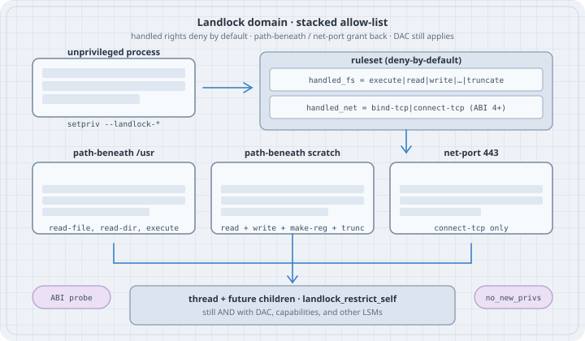

Landlock from the command line: setpriv
Landlock from the command line: setpriv
Overview
Thesis: Landlock is a stackable Linux Security Module that lets an ordinary process impose an extra allow-list on itself and its future children: filesystem actions on path hierarchies, and (from ABI 4) TCP bind/connect on port numbers. setpriv --landlock-access / --landlock-rule (util-linux 2.41) is the command-line front end for the filesystem half. Handled rights are denied by default; rules grant selected rights back. The domain is best-effort across ABI versions, and it only subtracts from what DAC, capabilities, and other LSMs already allow.
This chapter is the operator view: probe the ABI, sandbox a command with setpriv, and drive TCP policy through the same three syscalls setpriv wraps. It is not a container runtime, and it does not replace user namespaces (unshare).
Companion pages in this book: 15-services-and-runtime/12-unshare.md (namespaces), 07-io-uring-seccomp.md (seccomp / io_uring policy), 04-getcap.md (file capabilities).

Mental model
unprivileged process
│
│ 1. landlock_create_ruleset(handled_access_*)
│ handled bits = "these actions are now deny-by-default"
│ 2. landlock_add_rule() (optional, repeatable)
│ path-beneath /usr → read-file, read-dir, execute
│ path-beneath scratch → read + write + make-reg + truncate
│ net-port 443 → connect-tcp (ABI 4+)
│ 3. prctl(PR_SET_NO_NEW_PRIVS) (required without CAP_SYS_ADMIN)
│ 4. landlock_restrict_self()
│ policy sticks on this thread and every future child
▼
access is allowed only if EVERY layer agrees:
Landlock domain ∧ DAC (mode/owner) ∧ other LSMs ∧ capabilitiesA ruleset names the actions it handles. Anything handled and not granted by a rule is denied (EACCES for filesystem and TCP; EPERM for scoped IPC). Anything not handled is left to the rest of the system — that is the compatibility contract: a newer kernel will not suddenly start denying actions the program never listed.
setpriv does steps 1–4 then execves the program. util-linux 2.41.5 implements filesystem rules (Access: fs, path-beneath, rights through truncate). TCP, ioctl_dev, and IPC scopes exist in the kernel on this host (ABI 6) and are driven below with the raw syscalls. Check setpriv --help on your build: later util-linux documents net:connect-tcp and net-port:connect-tcp:PORT in the same flag pair.
| ABI | Mainline kernel (orientation) | What it added |
|---|---|---|
| 1 | 5.13 | Filesystem rights: execute, read/write file, read dir, remove, make-* |
| 2 | 5.19 | LANDLOCK_ACCESS_FS_REFER (cross-directory rename/link) |
| 3 | 6.2 | LANDLOCK_ACCESS_FS_TRUNCATE |
| 4 | 6.7 | LANDLOCK_ACCESS_NET_BIND_TCP, CONNECT_TCP |
| 5 | 6.10 | LANDLOCK_ACCESS_FS_IOCTL_DEV |
| 6 | 6.12 | LANDLOCK_SCOPE_ABSTRACT_UNIX_SOCKET, LANDLOCK_SCOPE_SIGNAL |
| 7 | 6.15 | Audit / LANDLOCK_RESTRICT_SELF_LOG_* (observability) |
| 8 | 7.0 | LANDLOCK_RESTRICT_SELF_TSYNC (process-wide enforce) |
| 9 | 7.1 | LANDLOCK_ACCESS_FS_RESOLVE_UNIX |
| 10 | 7.2 | UDP bind/connect-send; per-object quiet/audit flags |
Kernel versions are orientation only. Distros backport. Always probe the ABI. This box is Linux 6.12.94+ and reports ABI 6: filesystem through ioctl_dev, TCP, and IPC scopes. Audit flags, TSYNC, pathname UNIX resolve, and UDP need a newer ABI than this kernel.
Syntax
setpriv --landlock-access fs[:right,right,...] \
--landlock-rule path-beneath:right,right,...:/path \
[further --landlock-rule ...] \
program [args...]| Piece | Meaning |
|---|---|
--landlock-access fs |
Handle every filesystem right this setpriv was built with (2.41.5: through truncate). Denied unless a rule grants it. |
--landlock-access fs:truncate,write-file |
Handle only those rights. Unlisted actions stay unrestricted by this ruleset. |
--landlock-rule path-beneath:ACCESS:/PATH |
Allow ACCESS on the hierarchy under PATH (opened O_PATH). Repeatable. |
--no-new-privs |
setpriv already sets no_new_privs when it applies Landlock. Useful on its own for other drops. |
setpriv --help prints the rights and rule types the binary actually implements:
Landlock accesses:
Access: fs
Rule types: path-beneath
Rules: execute,write-file,read-file,read-dir,remove-dir,remove-file,make-char,make-dir,make-reg,make-sock,make-fifo,make-block,make-sym,refer,truncateKernel syscalls (what setpriv wraps; also the TCP path on 2.41):
landlock_create_ruleset(attr, size, flags) /* flags: VERSION=1, ERRATA=2 */
landlock_add_rule(fd, PATH_BENEATH|NET_PORT, attr, 0)
landlock_restrict_self(fd, flags)Safety
- Landlock is self-restriction. It cannot confer a right DAC withholds. A mode-
000file stays unreadable after you “allow” the directory. - Once
landlock_restrict_selfsucceeds, the policy cannot be removed, only stacked tighter. Children inherit it. - Unprivileged enforce requires
no_new_privs. Skipping that step returnsEPERM.CAP_SYS_ADMINcan skipno_new_privs; leaving it unset then lets a later setuid/file-cap exec become a confused deputy inside the domain. - Files (and sockets) already open when the ruleset is enforced keep their previous Landlock rights. Close what you do not want the sandbox to keep.
setpriv --landlock-access fswith no rules denies execute of the program itself (exit 126).- This page does not present breakout recipes, kernel builds, or LSM bypasses.
Examples with Explanations
Tested unprivileged on Linux 6.12.94+, Landlock ABI 6, util-linux 2.41.5, Python 3.13.5, GCC 14.2.0. /sys/kernel/security/lsm is capability,landlock,selinux. dmesg contains landlock: Up and running.
1. Probe the ABI (runs here)
# landlock_abi_probe.py — landlock_create_ruleset(NULL, 0, VERSION|ERRATA)
import ctypes, os, errno
libc = ctypes.CDLL(None, use_errno=True)
libc.syscall.restype = ctypes.c_long
NR_CREATE = 444
VERSION, ERRATA = 1 << 0, 1 << 1
def create(flags):
ctypes.set_errno(0)
r = libc.syscall(ctypes.c_long(NR_CREATE), None, ctypes.c_size_t(0),
ctypes.c_uint(flags))
return r, ctypes.get_errno()
abi, e = create(VERSION)
print(f"landlock_create_ruleset(NULL, 0, VERSION) = {abi}"
+ (f" errno={e} ({errno.errorcode.get(e)} {os.strerror(e)})" if abi < 0 else ""))
errata, e = create(ERRATA)
if errata < 0:
print(f"ERRATA = {errata} errno={e} ({errno.errorcode.get(e)} {os.strerror(e)})")
else:
bits = [i + 1 for i in range(64) if errata & (1 << i)]
print(f"landlock_create_ruleset(NULL, 0, ERRATA) = {errata} "
f"(fixed errata numbers: {bits or 'none'})")
print(f"uname: {os.uname().release}")
print(f"lsm: {open('/sys/kernel/security/lsm').read().strip()}")python3 landlock_abi_probe.pylandlock_create_ruleset(NULL, 0, VERSION) = 6
landlock_create_ruleset(NULL, 0, ERRATA) = 7 (fixed errata numbers: [1, 2, 3])
uname: 6.12.94+
lsm: capability,landlock,selinux6 is ABI 6: ioctl_dev and IPC scopes are present; audit flags (ABI 7) are not. ENOSYS would mean the kernel was built without Landlock; EOPNOTSUPP would mean it is compiled in but disabled at boot (lsm= without landlock).
The errata bitmask is optional. Kernel docs recommend that almost every program ignore it and keep best-effort sandboxing. Bits 1–3 set means this 6.12 kernel includes the TCP-socket-identification, scoped-signal, and disconnected-directory fixes.
Confirm the LSM list and the boot banner:
cat /sys/kernel/security/lsm
dmesg | grep -i landlock
setpriv --versioncapability,landlock,selinux
[ 0.169094] LSM: initializing lsm=capability,landlock,selinux
[ 0.169094] landlock: Up and running.
setpriv from util-linux 2.41.52. Read-only /usr, writable scratch (runs here)
Merged-usr layout: /bin, /lib, and /lib64 are symlinks into /usr, so one path-beneath on /usr covers the dynamic linker and dash/cat/python3. /etc is a different hierarchy.
# landlock_usr_scratch.sh — RO /usr + RW /tmp/ll-scratch
mkdir -p /tmp/ll-scratch
echo hello-scratch > /tmp/ll-scratch/note.txt
RO=read-file,read-dir,execute
RW=read-file,read-dir,write-file,remove-file,make-reg,truncate,make-dir,remove-dir
setpriv --landlock-access fs \
--landlock-rule "path-beneath:${RO}:/usr" \
--landlock-rule "path-beneath:${RW}:/tmp/ll-scratch" \
/usr/bin/sh -c '
echo "-- read /usr --"
/usr/bin/head -n 2 /usr/lib/os-release
echo "-- read scratch --"
/usr/bin/cat /tmp/ll-scratch/note.txt
echo landlocked-write > /tmp/ll-scratch/out.txt
echo "-- wrote scratch --"
/usr/bin/cat /tmp/ll-scratch/out.txt
echo "-- read /etc/passwd --"
/usr/bin/cat /etc/passwd
echo "-- write /tmp --"
echo nope > /tmp/ll-should-fail
'-- read /usr --
PRETTY_NAME="Debian GNU/Linux 13 (trixie)"
NAME="Debian GNU/Linux"
-- read scratch --
hello-scratch
-- wrote scratch --
landlocked-write
-- read /etc/passwd --
cat: /etc/passwd: Permission denied
-- write /tmp --
/usr/bin/sh: 12: cannot create /tmp/ll-should-fail: Permission deniedPermission denied here is EACCES (13). The same sandbox under Python:
setpriv --landlock-access fs \
--landlock-rule "path-beneath:${RO}:/usr" \
--landlock-rule "path-beneath:${RW}:/tmp/ll-scratch" \
/usr/bin/python3.13 -c 'import errno
for p, mode in [("/etc/passwd", "r"), ("/usr/bin/sh", "rb"),
("/tmp/ll-scratch/out.txt", "a")]:
try:
open(p, mode)
print(f"open({p!r}, {mode!r}): ok")
except OSError as e:
print(f"open({p!r}, {mode!r}): errno={e.errno} ({errno.errorcode[e.errno]}) {e.strerror}")
'open('/etc/passwd', 'r'): errno=13 (EACCES) Permission denied
open('/usr/bin/sh', 'rb'): ok
open('/tmp/ll-scratch/out.txt', 'a'): okWith no rules, execute of the program is itself denied:
setpriv --landlock-access fs /usr/bin/true; echo exit:$?setpriv: failed to execute /usr/bin/true: Permission denied
exit:126setpriv sets no_new_privs as part of applying Landlock. A nested setpriv --dump (with /proc also allowed so the SELinux label can be read) shows no_new_privs: 1.
3. Landlock does not outrank DAC (runs here)
echo secret-data > /tmp/ll-scratch/secret-dac
chmod 000 /tmp/ll-scratch/secret-dac
python3 -c 'import errno
try:
open("/tmp/ll-scratch/secret-dac")
except OSError as e:
print(f"no-landlock: errno={e.errno} ({errno.errorcode[e.errno]}) {e.strerror}")
'
setpriv --landlock-access fs \
--landlock-rule path-beneath:read-file,read-dir,execute:/usr \
--landlock-rule path-beneath:read-file,read-dir,write-file,remove-file,make-reg,truncate,make-dir,remove-dir:/tmp/ll-scratch \
/usr/bin/python3.13 -c 'import errno
try:
open("/tmp/ll-scratch/secret-dac")
except OSError as e:
print(f"landlock-RW: errno={e.errno} ({errno.errorcode[e.errno]}) {e.strerror}")
'no-landlock: errno=13 (EACCES) Permission denied
landlock-RW: errno=13 (EACCES) Permission deniedThe ruleset grants read-file on that hierarchy. Mode 000 still wins. Landlock is an extra deny layer.
4. Block TCP connect and bind (runs here)
util-linux 2.41.5 does not implement net: in --landlock-access (see The trap). The kernel on this host does. Same three syscalls, ABI 4+ handled_access_net:
# landlock_tcp_deny.py — handle bind-tcp|connect-tcp, add no port rules
import ctypes, os, errno, socket
libc = ctypes.CDLL(None, use_errno=True)
libc.syscall.restype = ctypes.c_long
libc.prctl.restype = ctypes.c_int
NR_CREATE, NR_ADD, NR_RESTRICT = 444, 445, 446
PR_SET_NO_NEW_PRIVS = 38
LANDLOCK_RULE_NET_PORT = 2
NET_BIND_TCP, NET_CONNECT_TCP = 1 << 0, 1 << 1
class RulesetAttr(ctypes.Structure):
_fields_ = [("handled_access_fs", ctypes.c_uint64),
("handled_access_net", ctypes.c_uint64),
("scoped", ctypes.c_uint64)]
class NetPortAttr(ctypes.Structure):
_fields_ = [("allowed_access", ctypes.c_uint64),
("port", ctypes.c_uint64)]
def must(r, what):
if r < 0:
e = ctypes.get_errno()
raise OSError(e, os.strerror(e), what)
return r
attr = RulesetAttr(0, NET_BIND_TCP | NET_CONNECT_TCP, 0)
ctypes.set_errno(0)
fd = must(libc.syscall(ctypes.c_long(NR_CREATE), ctypes.byref(attr),
ctypes.c_size_t(ctypes.sizeof(attr)), ctypes.c_uint(0)),
"create_ruleset")
print(f"ruleset fd={fd} handled_access_net=bind-tcp|connect-tcp (no port allow-rules)")
ctypes.set_errno(0)
must(libc.prctl(PR_SET_NO_NEW_PRIVS, 1, 0, 0, 0), "nnp")
ctypes.set_errno(0)
must(libc.syscall(ctypes.c_long(NR_RESTRICT), ctypes.c_int(fd), ctypes.c_uint(0)),
"restrict")
os.close(fd)
print("restricted self")
def try_connect(host, port):
s = socket.socket(socket.AF_INET, socket.SOCK_STREAM)
s.settimeout(3)
try:
s.connect((host, port))
print(f"connect({host},{port}): ok peer={s.getpeername()}")
except OSError as e:
print(f"connect({host},{port}): errno={e.errno} ({errno.errorcode.get(e.errno)}) {e.strerror}")
finally:
s.close()
def try_bind(port):
s = socket.socket(socket.AF_INET, socket.SOCK_STREAM)
s.setsockopt(socket.SOL_SOCKET, socket.SO_REUSEADDR, 1)
try:
s.bind(("127.0.0.1", port))
print(f"bind(127.0.0.1,{port}): ok {s.getsockname()}")
except OSError as e:
print(f"bind(127.0.0.1,{port}): errno={e.errno} ({errno.errorcode.get(e.errno)}) {e.strerror}")
finally:
s.close()
try_connect("1.1.1.1", 443)
try_connect("127.0.0.1", 9)
try_bind(0)
try_bind(18080)python3 landlock_tcp_deny.pyruleset fd=5 handled_access_net=bind-tcp|connect-tcp (no port allow-rules)
restricted self
connect(1.1.1.1,443): errno=13 (EACCES) Permission denied
connect(127.0.0.1,9): errno=13 (EACCES) Permission denied
bind(127.0.0.1,0): errno=13 (EACCES) Permission denied
bind(127.0.0.1,18080): errno=13 (EACCES) Permission deniedUDP, UNIX sockets, and already-open descriptors are outside this ruleset. Port 0 on bind means “the ephemeral range”; handling bind-tcp without a port-0 rule denies that too.
5. Allow TCP connect to 443 only (runs here)
# landlock_tcp_allow443.py — connect-tcp allowed only to port 443
import ctypes, os, errno, socket
libc = ctypes.CDLL(None, use_errno=True)
libc.syscall.restype = ctypes.c_long
libc.prctl.restype = ctypes.c_int
NR_CREATE, NR_ADD, NR_RESTRICT = 444, 445, 446
PR_SET_NO_NEW_PRIVS = 38
LANDLOCK_RULE_NET_PORT = 2
NET_BIND_TCP, NET_CONNECT_TCP = 1 << 0, 1 << 1
class RulesetAttr(ctypes.Structure):
_fields_ = [("handled_access_fs", ctypes.c_uint64),
("handled_access_net", ctypes.c_uint64),
("scoped", ctypes.c_uint64)]
class NetPortAttr(ctypes.Structure):
_fields_ = [("allowed_access", ctypes.c_uint64),
("port", ctypes.c_uint64)]
def must(r, what):
if r < 0:
e = ctypes.get_errno()
raise OSError(e, os.strerror(e), what)
return r
attr = RulesetAttr(0, NET_BIND_TCP | NET_CONNECT_TCP, 0)
ctypes.set_errno(0)
fd = must(libc.syscall(ctypes.c_long(NR_CREATE), ctypes.byref(attr),
ctypes.c_size_t(ctypes.sizeof(attr)), ctypes.c_uint(0)),
"create_ruleset")
rule = NetPortAttr(NET_CONNECT_TCP, 443)
ctypes.set_errno(0)
must(libc.syscall(ctypes.c_long(NR_ADD), ctypes.c_int(fd),
ctypes.c_int(LANDLOCK_RULE_NET_PORT),
ctypes.byref(rule), ctypes.c_uint(0)), "add_rule")
must(libc.prctl(PR_SET_NO_NEW_PRIVS, 1, 0, 0, 0), "nnp")
ctypes.set_errno(0)
must(libc.syscall(ctypes.c_long(NR_RESTRICT), ctypes.c_int(fd), ctypes.c_uint(0)),
"restrict")
os.close(fd)
print("restricted: connect-tcp allowed only to port 443")
def try_connect(host, port):
s = socket.socket(socket.AF_INET, socket.SOCK_STREAM)
s.settimeout(3)
try:
s.connect((host, port))
print(f"connect({host},{port}): ok peer={s.getpeername()}")
except OSError as e:
print(f"connect({host},{port}): errno={e.errno} ({errno.errorcode.get(e.errno)}) {e.strerror}")
finally:
s.close()
try_connect("1.1.1.1", 443)
try_connect("1.1.1.1", 80)
try_connect("1.1.1.1", 53)python3 landlock_tcp_allow443.pyrestricted: connect-tcp allowed only to port 443
connect(1.1.1.1,443): ok peer=('1.1.1.1', 443)
connect(1.1.1.1,80): errno=13 (EACCES) Permission denied
connect(1.1.1.1,53): errno=13 (EACCES) Permission deniedLater util-linux expresses the same policy as setpriv --landlock-access net:connect-tcp --landlock-rule net-port:connect-tcp:443 … once setpriv --help lists Access: net. This 2.41.5 binary does not.
6. EPERM: missing no_new_privs, and scoped signals (runs here)
Filesystem and TCP denials return EACCES. Two common EPERM cases:
# landlock_eperm.py — restrict_self without nnp; scoped signal to parent
import ctypes, os, errno, signal
libc = ctypes.CDLL(None, use_errno=True)
libc.syscall.restype = ctypes.c_long
libc.prctl.restype = ctypes.c_int
NR_CREATE, NR_RESTRICT = 444, 446
PR_SET_NO_NEW_PRIVS = 38
SCOPE_SIGNAL = 1 << 1
FS_READ_FILE = 1 << 2
class RulesetAttr(ctypes.Structure):
_fields_ = [("handled_access_fs", ctypes.c_uint64),
("handled_access_net", ctypes.c_uint64),
("scoped", ctypes.c_uint64)]
attr = RulesetAttr(FS_READ_FILE, 0, 0)
ctypes.set_errno(0)
fd = libc.syscall(ctypes.c_long(NR_CREATE), ctypes.byref(attr),
ctypes.c_size_t(24), ctypes.c_uint(0))
ctypes.set_errno(0)
r = libc.syscall(ctypes.c_long(NR_RESTRICT), ctypes.c_int(fd), ctypes.c_uint(0))
e = ctypes.get_errno()
print(f"restrict_self without nnp: ret={r} errno={e} ({errno.errorcode.get(e)}) {os.strerror(e)}",
flush=True)
os.close(fd)
parent = os.getpid()
pid = os.fork()
if pid == 0:
attr = RulesetAttr(0, 0, SCOPE_SIGNAL)
ctypes.set_errno(0)
fd = libc.syscall(ctypes.c_long(NR_CREATE), ctypes.byref(attr),
ctypes.c_size_t(24), ctypes.c_uint(0))
libc.prctl(PR_SET_NO_NEW_PRIVS, 1, 0, 0, 0)
libc.syscall(ctypes.c_long(NR_RESTRICT), ctypes.c_int(fd), ctypes.c_uint(0))
try:
os.kill(parent, 0)
print("kill(parent, 0): ok", flush=True)
except OSError as e:
print(f"kill(parent, 0): errno={e.errno} ({errno.errorcode.get(e.errno)}) {e.strerror}",
flush=True)
os._exit(0)
signal.signal(signal.SIGUSR1, lambda *a: None)
os.waitpid(pid, 0)python3 landlock_eperm.pyrestrict_self without nnp: ret=-1 errno=1 (EPERM) Operation not permitted
kill(parent, 0): errno=1 (EPERM) Operation not permittedABI 6 LANDLOCK_SCOPE_SIGNAL confines outgoing signals to the same (or a nested) Landlock domain. The parent is outside, so kill returns EPERM. Abstract UNIX sockets use the sibling scope flag and also deny with EPERM.
The trap
**Trap: “--landlock-access net:connect-tcp sandboxes TCP on util-linux 2.41."** On **2.41.5**,parse_landlock_accessonly honoursfsandfs:…. Any other prefix is a silent no-op:setpriv –landlock-access net:connect-tcpstill connected to1.1.1.1:443here.setpriv –landlock-rule net-port:connect-tcp:443errors (invalid landlock rule). Read theLandlock accesses:block fromsetpriv –help` before copying flags from a newer man page.
Trap: “a path-beneath rule grants access.” It grants Landlock’s slice of the right, on that inode hierarchy. Mode bits, ownership, mount flags, and SELinux still have to agree. Example 3 is the short form: chmod 000 plus a RW ruleset is still EACCES.
Trap: “handled rights are an allow-list of what the program may do.” They are a deny-by-default set of actions this ruleset cares about. Omitting truncate from handled_access_fs leaves truncation unrestricted by Landlock (ABI 3+). setpriv --landlock-access fs handles everything it was compiled with, including refer and truncate; that is stricter, and on an ABI 1 kernel those extra bits make landlock_create_ruleset fail with EINVAL. The kernel docs’ best-effort pattern is: probe ABI, then mask off unknown rights. setpriv 2.41 does not do that mask.
Trap: “ABI 6 has audit logs.” Observability (LANDLOCK_RESTRICT_SELF_LOG_*, AUDIT_LANDLOCK_ACCESS) is ABI 7 / Linux 6.15. This 6.12 kernel stops at scopes. Process-wide TSYNC is ABI 8; UDP is ABI 10. Probe; do not guess from uname.
The boring rule
Name every action you intend to deny in handled_access_* / --landlock-access, then grant the hierarchies and ports the program actually needs with rules. Probe the ABI and degrade. Keep no_new_privs. Treat Landlock as one more AND-clause next to DAC.
Try this
- Re-run Example 2 and add
--landlock-rule path-beneath:read-file,read-dir:/etc. Confirmcat /etc/passwdworks andecho x > /etc/hostnamestill fails. - Handle only
fs:truncatewith a rule on the scratch dir, thenos.truncatea scratch file (allowed) and/etc/hostname(EACCES). Then handlewrite-file,truncatebut grant onlywrite-fileon scratch: append works,truncatereturnsEACCES. (Both were run here.) - On a 2.42+/devel
setprivwhose--helplistsAccess: net, express Example 5 as--landlock-access net:connect-tcp --landlock-rule net-port:connect-tcp:443. - On Linux 6.15+ (ABI 7+), read Landlock audit and watch one denied
connectasAUDIT_LANDLOCK_ACCESS.
Verification
- All numbered examples compiled/run on this box: Linux 6.12.94+, Landlock ABI 6, util-linux setpriv 2.41.5, Python 3.13.5, user
uid=1000. Output pasted above. - ABI probe used
landlock_create_rulesetviactypes(__NR_landlock_create_ruleset= 444) withLANDLOCK_CREATE_RULESET_VERSION/_ERRATAfrom/usr/include/linux/landlock.h. - TCP examples used the same UAPI (
handled_access_net,LANDLOCK_RULE_NET_PORT).setpriv --landlock-access net:…was tried and is a no-op on 2.41.5; that trial is in The trap, not sold as a working sandbox. ioctl-devis in the kernel UAPI here (LANDLOCK_ACCESS_FS_IOCTL_DEV) and is not accepted by thissetpriv(could not parse landlock fs access: ioctl-dev).- No package installs, no root, no kernel builds.
dmesgwas readable unprivileged on this host. Audit examples (ABI 7) are documentation-only.
Sources
- Kernel userspace API — Landlock: unprivileged access control (ABI table, best-effort mask, TCP/UDP, scopes, audit flags; dated August 2026)
- Kernel admin guide — Landlock LSM (audit record types)
- man7 —
landlock(7),landlock_create_ruleset(2),landlock_add_rule(2),landlock_restrict_self(2) - man7 —
setpriv(1)(util-linux;--landlock-access/--landlock-rule) - util-linux 2.41.5 source —
sys-utils/setpriv-landlock.c(filesystem-only parser) - UAPI on this host —
/usr/include/linux/landlock.h - Kernel sample —
samples/landlock/sandboxer.c - Landlock project — news / ABI timeline